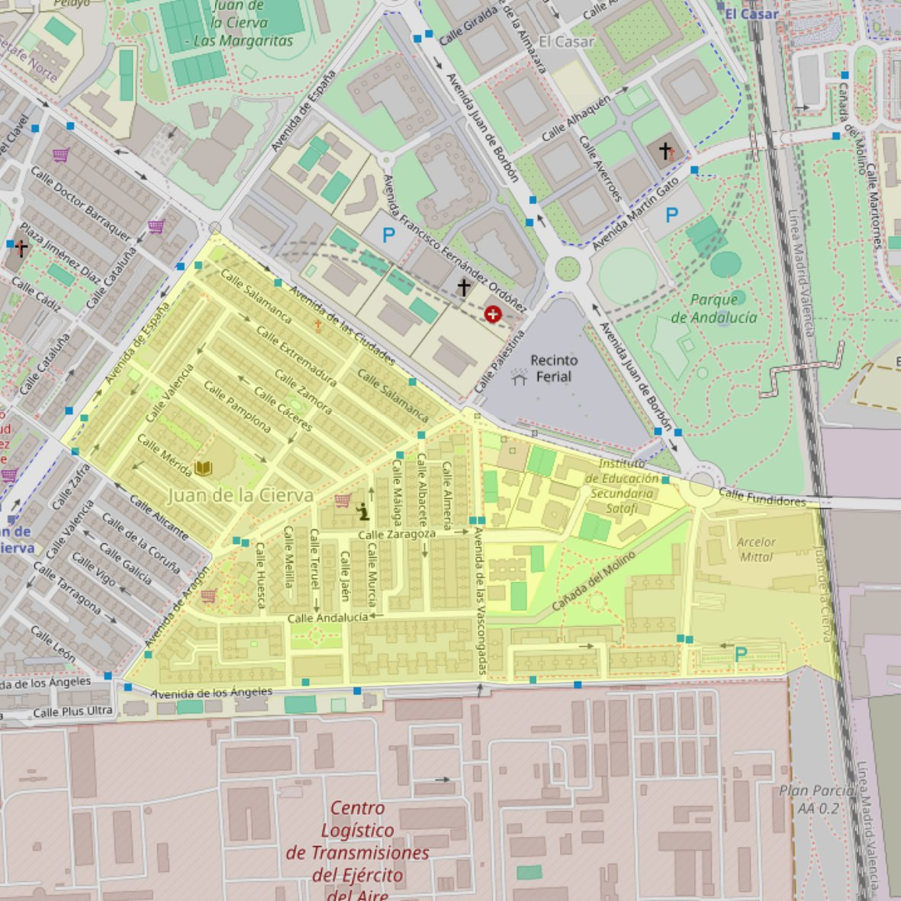

Nuestra Señora del Cerro

- Arciprestazgo
- Getafe
- Población
- Getafe
- Dirección postal
- c/ Salamanca, 23
- Código postal
- 28903
- Extensión
- 0,43 km² (43 ha)
- Correo electrónico
- pnsdelcerro@hotmail.com
Arciprestazgos y parroquias de la Diócesis de Getafe
